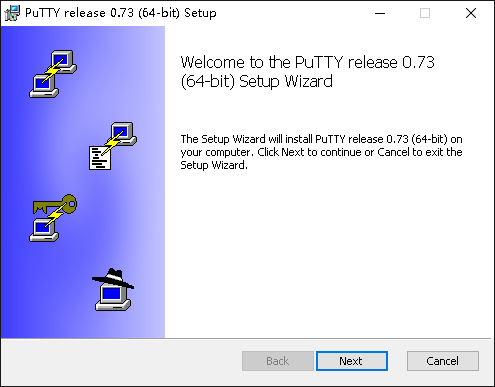
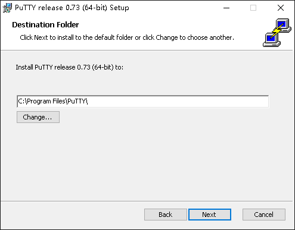
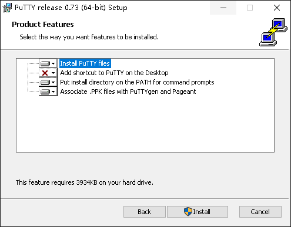
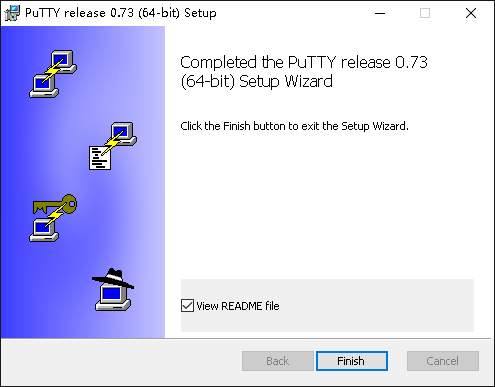
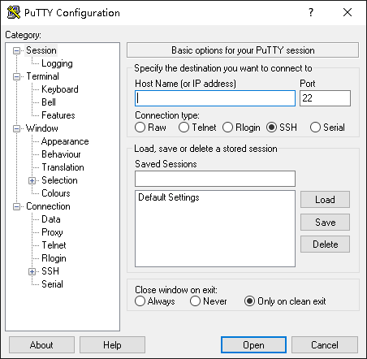
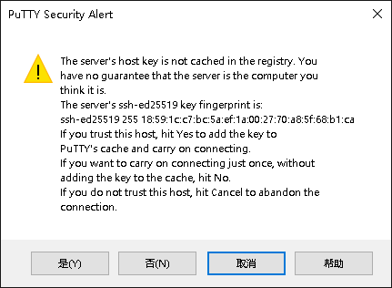
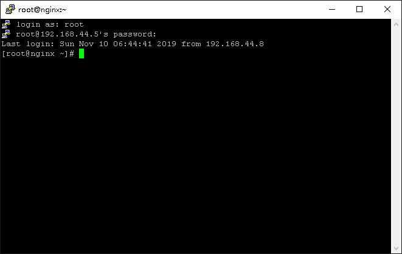

1.6 通过 SSH 远程登录¶
了解远程登录¶
SSH(Secure Shell)安全外壳协议是一种加密的网络传输协议，可在不安全的网络中为网络服务提供安全的传输环境。SSH 通过在网络中创建安全隧道来实现 SSH 客户端与服务端之间的连接。任何网络服务都可以通过 SSH 实现安全传输，SSH 最常见的用途是远程登录系统，人们通常利用 SSH 来传输命令行界面和远程执行命令。目前 SSH 使用率最高的使用场景是 Linux 系统。
在安装完成 CentOS 或 Ubuntu 系统之后，它们默认都是开启 SSH 服务，虽然我们也可以在终端中对服务器进行操作，但是服务器一般都是托管在数据中心，使用终端我们并不能非常方便的管理到服务器。通过 SSH 服务我们可以通过网络远程控制服务器，对服务器进行操作，这会大大提高我们的管理多台设备的效率。
我们在终端中可以使用命令 w 查看当前使用终端或SSH登录的用户信息，如下：
$ w
19:04:58 up 2:06, 2 users, load average: 0.00, 0.00, 0.00
USER TTY FROM LOGIN@ IDLE JCPU PCPU WHAT
root tty1 - 17:08 12:24 0.03s 0.03s -bash
renkeju pts/0 192.168.0.2 18:52 1.00s 0.04s 0.01s w
从打印的内容中我们可以看到了 “TTY”，“TTY”列出了 “tty1” 和 “pts/0”，“tty0” 表示第一个物理终端，“pts/0”表示第一个虚拟终端。
如何启动 SSH 服务¶
使用命令 sudo systemctl status sshd 查看 SSH 服务状态:
$ sudo systemctl status sshd
● sshd.service - OpenSSH server daemon
Loaded: loaded (/usr/lib/systemd/system/sshd.service; enabled; vendor preset: enabled)
Active: active (running) since Sun 2019-11-10 16:58:14 CST; 1h 55min ago
Docs: man:sshd(8)
man:sshd_config(5)
Main PID: 977 (sshd)
Tasks: 1 (limit: 10981)
Memory: 5.2M
CGroup: /system.slice/sshd.service
└─977 /usr/sbin/sshd -D -oCiphers=aes256-gcm@openssh.com,chacha20-poly1305@openssh.com,aes256-ctr,aes256-cbc,aes128-gcm@openssh.com,aes128>
11月 10 16:58:14 localhost.localdomain systemd[1]: Starting OpenSSH server daemon...
11月 10 16:58:14 localhost.localdomain sshd[977]: Server listening on 0.0.0.0 port 22.
11月 10 16:58:14 localhost.localdomain sshd[977]: Server listening on :: port 22.
11月 10 16:58:14 localhost.localdomain systemd[1]: Started OpenSSH server daemon.
11月 10 18:52:58 localhost.localdomain sshd[1811]: Accepted password for renkeju from 192.168.0.2 port 47296 ssh2
...省略...
我们可以看到 OpenSSH Server 在运行中且开机自启动。如果 SSH 服务器没有启动，我们可以使用命令 sudo systemctl start sshd 启动 SSH 服务。
$ sudo systemctl start sshd
然后在使用命令 sudo systemctl status sshd 查看 SSH 服务状态。
使用 SSH 客户端对系统进行远程管理¶
刚才我们查看服务器中 SSH 服务的状态，如何连接SSH服务呢？我们需要使用 SSH 客户端连接 SSH 服务端，一般在 Linux 系统中都默认安装了 SSH 客户端，但是在 Windows 平台中，SSH 客户端默认是没有开启或安装的。在互联网上也有非常多的SSH客户端软件可以使用，它们除了提供 ssh 客户端的功能之外，还集成一些其他的功能，选择一款好的 SSH 管理软件不但容易使用，对于工作效率的提升也非常明显。常见的SSH客户端软件有 PuTTY、Xshell和SecureCRT 等，这里主要介绍 PuTTY 的使用。
我们打开网址 https://www.chiark.greenend.org.uk/~sgtatham/putty/latest.html 下载 PuTTY 软件安装包。下面我们安装 PuTTY：
   运行 PuTTY 就可以看到如下界面：
在“Host Name(or IP Address)” 框内输入服务器的 IP 或主机名，选择SSH协议，SSH 协议默认端口为22，如果你修改了 SSH 协议的端口号，记得修改此处端口号。如果希望把这次的输入保存起来，方便以后再次登录，可以在“Saved Sessions”框内输入会话保存的名称，比如“Web Server”，之后点击保存即可。

最后点下面的 “Open” 按钮，输入正确的用户名和口令，就可以登录服务器了。首次登录一台主机时会看到这个安全告警的对话框：
这是要告诉你登录的主机密钥指纹，点“是”就保存起来，以后就不会再弹出这个窗口，然后就正常登录。点击“否”不保存，下次登录还会弹出这个对话框，但是也可以正常登录。点击“取消”则取消此次登录。
